生成式推荐要预测用户下一个商品：先把商品编成短的 Semantic ID（SID），再根据交互历史自回归生成这串 ID，并映射回商品。再往前加一截「先推理再生成」，常见两条贵路：让大模型给每条训练样本写 CoT，再把整段痕迹压进隐状态；或者像 Coconut 那样，把最后一层隐状态循环喂回下一步——serving 引擎要额外开一条非标准回路。代表方法 LASAR 两样都占：用循环隐状态对齐教师 CoT 表示，再用强化学习定推理深度。PHiT 要改的是监督从哪来、中间状态怎么算：监督来自用户已经点过的商品语义，中间计算就是普通 thought token 的一次标准预填。
教师思维链里，哪一步真的帮预测 SID
他们沿 GREAM（生成式推荐里一套把思维链写成历史、偏好、意图三步的模板）/ LASAR 的三步模板，把教师痕迹切成历史分析（U1）、偏好构造（U2）、意图推断（U3）。在 Beauty 训练集上，用一个只用推荐目标训过的 Stage 1 学生测两件事：答案贡献是「保留该步时目标 SID 的对数似然」减去「从痕迹里删掉该步后」的对数似然，正数表示该步有帮助；连贯贡献是对下一步文本做同样的前后差。答案贡献在完整痕迹里保留其余步骤，只去掉当前这一步；连贯贡献则只比较含或不含该步的前缀，去预测紧接着的下一步文本。答案贡献按目标 SID 的 token 长度归一化，连贯贡献按下一步文本 U_{i+1} 的 token 长度归一化。U3 是最后一步，没有后继，因此不算连贯贡献。
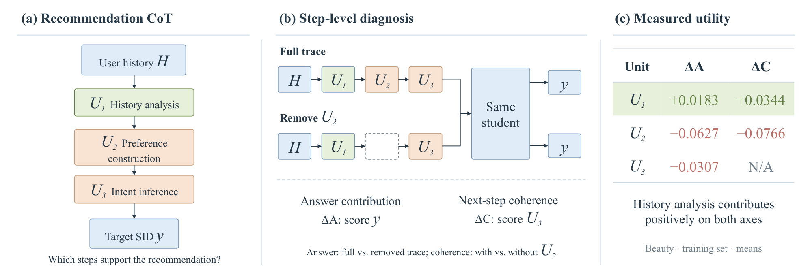
均值上，只有 U1 两边都为正（答案贡献 +0.0183，连贯贡献 +0.0344）。U2 两边都为负（−0.0627 和 −0.0766）；U3 的答案贡献也是负的（−0.0307）。部分中位数更刺眼：U1 的答案贡献中位数只有 +0.0006，几乎贴零；U3 的答案中位数比均值更负。因为这是似然诊断而不是对整类潜在推理方法的终裁，它能动摇的是「整段教师痕迹都该蒸馏」的默认，而不是宣布偏好或意图故事一律永远有害。
只留下历史分析时，监督文本少了，指标反而更好
Instruments 上做了更直接的对照：同一套 LASAR 框架、只做 SFT，只留 U1 相对满思维链，监督文本从平均 2377 字符降到 921，少了六成以上。六项推荐指标全部更好，但幅度不大。满思维链相对「完全不加思维链、只做推荐 SFT」也不是处处占优——有的命中率档反而不如。这说明在这个对照里，历史证据是更有效的中间监督来源；把「偏好 / 意图步骤一律有害」说成普遍定律，会超出这张表愿意承担的范围。
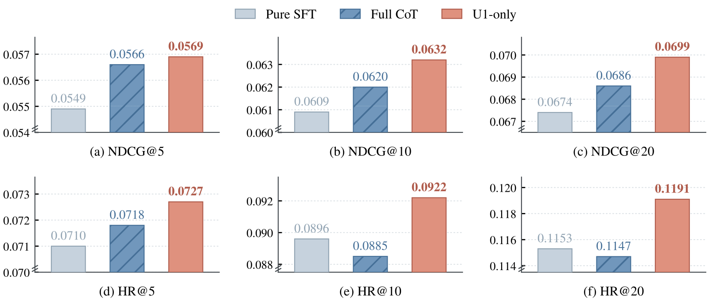
骨干实例是 Qwen3-0.6B，评测按留一法取最后一次交互。Beauty / Instruments / Sports 用 GREAM 划分，Steam 用 LASAR 设置。后面主表的对照，都要放在这个协议里读。
不用教师痕迹，也不用循环隐状态
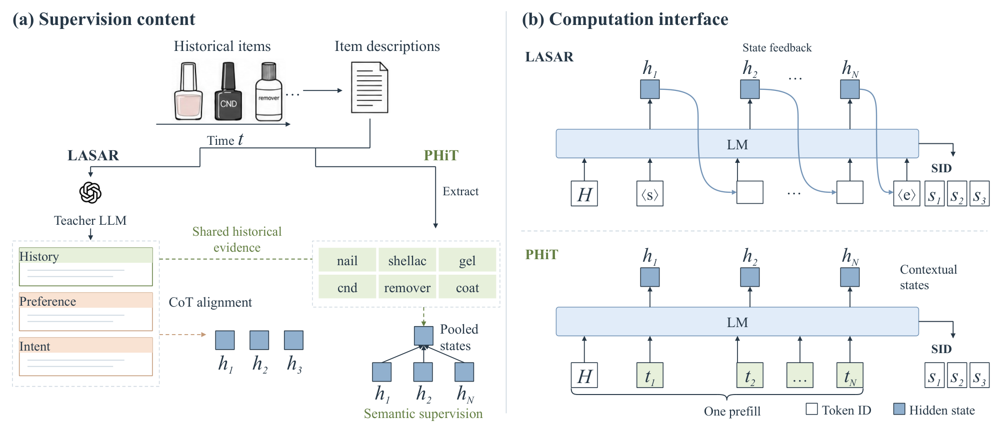
PHiT（Prefilled, History-Informed Thought Tokens）干两件具体的事。
第一，监督目标直接从用户已经点过的商品来。冻结的稀疏编码器（SPLADEv2）读商品标题、品牌、类目和描述，给目录里每个商品算一次词权重并缓存；把该用户历史上各商品的词权重向量相加，再取总分最高的 K 个词（文中 K=16）置为 1，其余为 0，得到多热目标。构造时看不到下一个要预测的商品标签，为的是让中间监督停在「已经观察过的证据」，而不是提前看见答案。只做推荐损失时，模型不一定会在中间位置把历史商品的语义概括出来；把这些关键词当作辅助目标，是想逼 thought token 先写下一截可检查的历史摘要，再去生成 SID。Beauty 全量 131,413 条训练目标，一张 GPU 加 CPU 大约 113 秒；同规模用 Qwen3.6-35B-A3B 写教师思维链要八张 A800 跑约 145 分钟——硬件不同，量级差仍清楚。 构造历史目标时编码器全程冻结，目录向量只算一次并缓存，所以这部分成本不必随着每个训练 epoch 再付一遍。Stage 2 训练时间与「只有 thought token、无历史损失」的 Base 几乎相同。
第二，在词表里加入 N 个固定的 thought token，插在历史提示和目标 SID 之间。ID 对所有用户相同，但经因果注意力看过前面的历史后，最终层状态因用户而异。训练时对这些状态做均值池化，用轻量线性头去拟合上面的历史关键词（类别平衡的二元交叉熵），再和 SID 的自回归损失一起训，历史提示和 thought 这段本身不计入语言模型标签。推理时扔掉稀疏编码器和辅助头，只把同一串 thought token ID 拼进提示，做一次标准因果预填，然后解 SID。 Hoot 说

- 训练：状态均值池化 → 拟合历史关键词；再加 SID 自回归损失。thought 位置本身不计语言模型标签。
左右是两个示意用户，输入同一串 thought token ID。历史不同，经因果注意力后最终层状态不同；这些状态均值池化后去拟合各自的历史关键词，再和 SID 损失一起回传。论文没有用这两位用户，数字与词都是示意。 出处: 论文 §4：固定 thought token ID 对所有用户相同，经因果注意力后状态因用户而异；训练时均值池化后用线性头拟合历史关键词，与 SID 自回归损失联合训练；历史提示和 thought 块本身不计入语言模型标签。示意用户为本文添加。
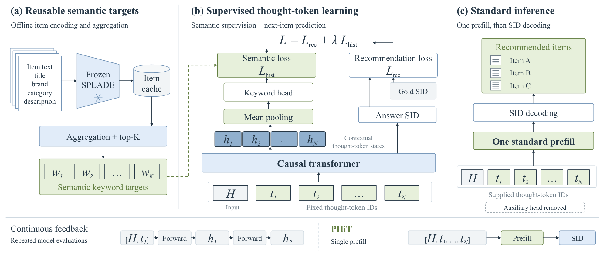
没有最终层隐状态回灌，KV cache 接口也不用改；代价是序列和缓存多 N 个位置（外加边界 token）。这是有意换来的接口简化。
N 在 {1, 2, 4, 8} 中按验证集选取，Beauty 上选 N=8。测试集上只做推荐监督的 Base，NDCG@5 依次为 0.02271、0.02263、0.02218、0.02356，说明曲线并不随 N 单调变好，只是 N=8 在验证和测试两边都最高。thought token 本身不必被解释成可读的关键词：稀疏编码器和辅助头在推理时已经扔掉，它们只要在训练里把信号写进这些位置即可。
主表和消融该怎么读
四个基准（Beauty / Instruments / Sports / Steam）上，PHiT 只用监督微调，主表 24 个指标里全面最高，其中 22 项相对对应数据集、对应指标上的最强基线显著。显著性阈值是偏松的 p<0.1；Sports 与 Beauty 的 NDCG@5 两格不显著。基线分数直接引自 LASAR 文稿、没有重跑；LASAR 含强化学习阶段，PHiT 只用监督微调。这一对照测的是「在已发表数值和五次种子均值之间是否更高」，不是在完全相同训练配方下的公平重赛。
| 数据集 | 指标 | LASAR | PHiT |
|---|---|---|---|
| Beauty | NDCG@5 / @10 / @20 | 0.0239 / 0.0303 / 0.0366 | 0.0242 / 0.0311 / 0.0386 |
| Beauty | Hit@5 / @10 / @20 | 0.0365 / 0.0563 / 0.0813 | 0.0375 / 0.0591 / 0.0890* |
| Instruments | NDCG@5 / @10 / @20 | 0.0612 / 0.0667 / 0.0730 | 0.0621 / 0.0685 / 0.0749* |
| Instruments | Hit@5 / @10 / @20 | 0.0763 / 0.0937 / 0.1184 | 0.0780 / 0.0980 / 0.1233* |
| Sports | Hit@20 / NDCG@20 | 0.0425 / 0.0188 | 0.0517 / 0.0211 |
| Steam | Hit@5 | 0.0505 | 0.0561* |
表中带星号的是原文主表里相对最强基线显著的格子。Sports 相对 LASAR 的 Hit@20 约 +21.7%、NDCG@20 约 +12.2%，Steam 的 Hit@5 约 +11.2%。这些相对涨幅说明 PHiT 在四个集上都站上主表最高，但不应离开「基线未重跑、一边含强化学习」的设定去读成绝对优势。
Beauty 上五次种子的消融把贡献拆开更清楚。相对「只有推荐、没有 thought token」的 MiniOneRec（监督微调）参照——该消融里是单次运行——加上 8 个 thought token、仍只做推荐监督（Base）已经贡献了相对 MiniOneRec 的大部分 NDCG@5 增益；PHiT 相对 Base 在 NDCG@5 上大约再 +2.5%。相对 MiniOneRec，PHiT 的 NDCG@1 / @5 / @10 分别约 +20.6% / +10.3% / +8.6%。shuffled targets 把各样本的历史关键词目标做错排置换（保留关键词边际分布，切断用户与目标的匹配），PHiT 相对它显著更好（NDCG@5，p=0.013）。对齐教师思维链表示的对照弱于 PHiT（五次匹配运行全部更低，NDCG@5 的 p=0.018）。对「同样在 thought token 上预测从教师思维链里提取的关键词」的对照（关键词来自教师痕迹，不是教师直接生成的关键词），PHiT 各档均值都更高，但优势没那么稳定（NDCG@5 的 p 约 0.083，原文未称五次全胜）。也就是说：多出来的 token 位置本身很值钱；在位置固定以后，匹配的历史目标比打乱或教师派生目标更有用，但幅度是受控的增量，不宜把「相对无 thought 基线 +20% NDCG@1」读成监督配方的全部功劳。
诊断和「只留 U1」的重训，分别落在 Beauty 和 Instruments 上，作者没有把它写成对所有领域都成立的定律。主表之外，推理端只论证了接口兼容（一次标准预填，不必改 KV 接口），没有另报生产时延。训练里辅助损失的权重取 λ=1.0，解码用 beam 50。读主表增益时，要把这些设定一起带着。
该记住什么
生成式推荐里，中间计算不必绑定「先让老师写偏好和意图」。Beauty 诊断里，唯一在答案与连贯两项上均值都为正的是历史分析（幅度不大），偏好与意图步骤的平均答案贡献为负；PHiT 把观察过的商品语义写成可缓存的监督信号，塞进普通 thought token，一次预填跑完。省掉的是教师痕迹和自定义隐状态回路；换来的主表增益，要和「多了若干 token 位置」一起读，而不是只记一个对 LASAR 的百分比。
读完这篇，你觉得
夜读鸮记下了，谢谢你的反馈。
点一下即可，无需登录；再点一次撤回。只统计匿名次数，不记录你是谁。
相关论文RELATED
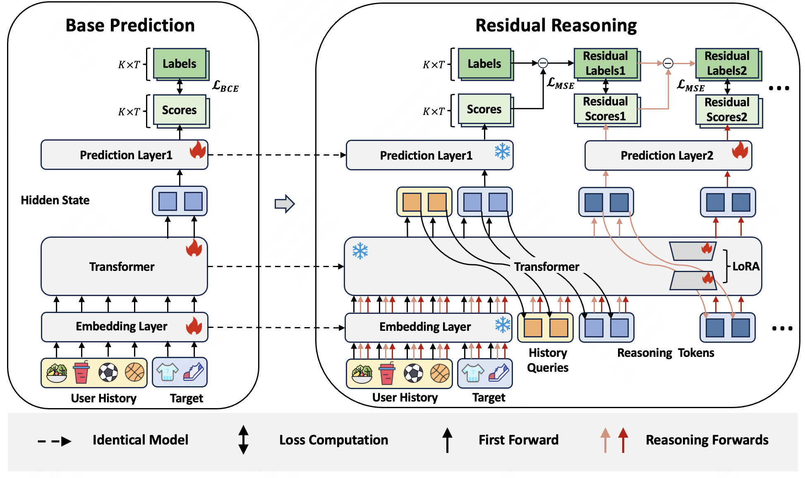
Generative · 2026-10-29Latent Residual Reasoning for Ranking in Generative Recommendation生成式排序模型一次前向就给所有候选打完分，没有机会再细看、修正。美团和中科大的 Refiner 在这之后再多算几步：给每个候选接一个推理 token，每一步只预测加到原分数上的修正量，原模型完全冻结，只训练 LoRA 和新输出层。在 Steam 数据集上，它把美团的生成式排序模型 MTGR 的 AUC 提到 0.7872；接在线上模型之后做 A/B，点击率提升 0.75%。因为只学残差，多算的几步是在原有分数上加修正量，而不是从头重新打分。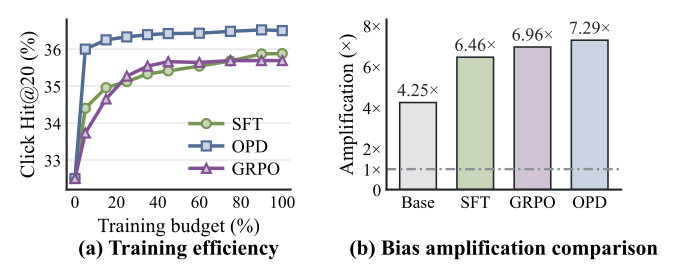
Generative · 2026-11-04Diverse-Teacher On-Policy Distillation for Generative Recommendation让学生模型自己生成、老师逐位给出完整概率的蒸馏（OPD）能让生成式推荐训得更快，但学生会越来越偏向热门商品。原因有两头：老师的概率本来就偏爱热门商品的 SID，学生自己生成时也很少走到冷门商品的 SID，这些路径几乎拿不到监督。HERO 先按商品在训练数据里出现的次数分出热门和冷门两组，各从头训练一个老师并冻结。蒸馏时，每条样本按真实点击的商品属于哪一组，交给对应的老师。学生用束搜索自己生成几条 SID，在每一位上去贴近这位老师给的完整概率。如果真实商品是冷门的，它的真实 SID 也作为一条额外路径，学生在这条路径的每一位上也贴近冷门老师。上线只用学生。在 1688 首页「猜你喜欢」的 15 天 A/B 里，GMV 提升 3.412%。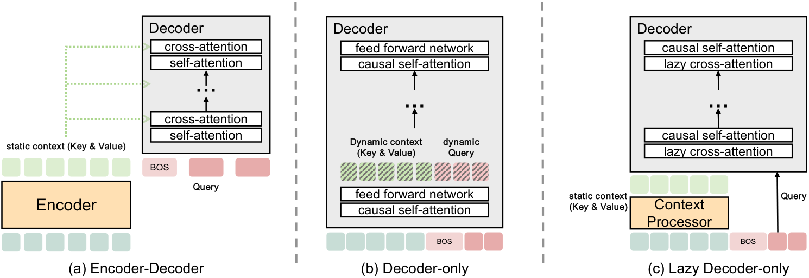
Generative · 2026-10-28LoopGR: Parameter-Efficient Scaling for Generative Recommendation via Recurrent Depth生成式推荐想变强通常就是加层，也就是加参数和显存。腾讯的 LoopGR（一种循环复用解码器的生成式推荐结构）让同一个解码器反复跑好几遍。每两遍之间，把解码器开头 BOS 位置的隐状态（概括模型此刻对目标的判断）加到历史的每个位置上，再用一个很小的 GRU 沿物品顺序重写历史表示。解码器反复修正预测，历史跟着预测一起变。同等计算量下，它用一半左右的参数就胜过编码器—解码器结构；工业数据上 Recall@10 为 0.6458，高于线上模型 BARGE 的 0.6277。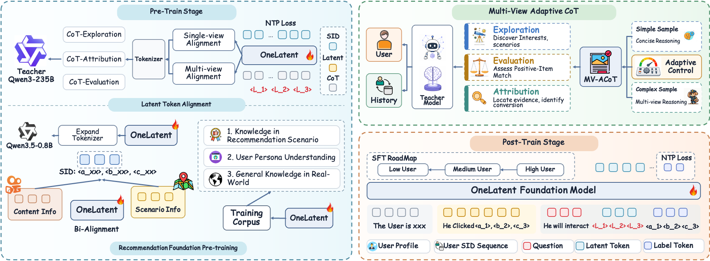
Generative · 2026-10-24OneLatent: Latent Reasoning for Efficient Foundation Recommendation Models把大语言模型当作推荐底座时，让模型先写一段自然语言推理再输出下一个物品的语义编码，推理文本比语义编码长得多，解码时间和吞吐都被它拖住。OneLatent 的做法是在用户上下文后面接 3 个固定的特殊 token，训练分几步：先让模型在这些 token 之后复现教师大模型写的推理文本，再改成在它们之后直接输出目标语义编码；上线时只接这些 token，不生成任何推理文字。在工业数据上，OneLatent 前 64 个候选的语义编码命中率比先写推理再作答高 17.44%，推理吞吐是显式推理的 17.49 倍。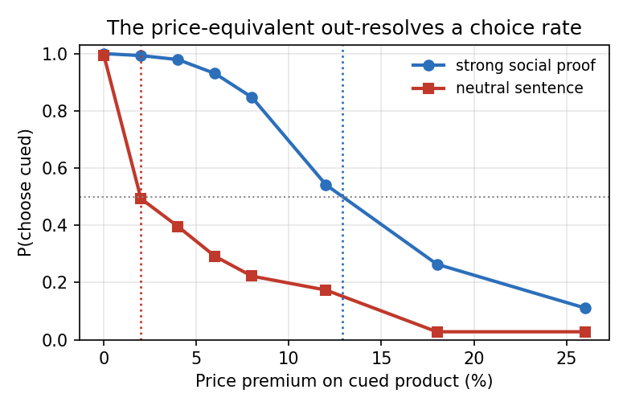
Generative · 2026-10-25A Cue's Hidden Price: Auditing Seller Influence on AI Shoppers两款耳机价格、星级、参数完全一样，只有一款多了一句「我们最畅销的型号，超过 10,000 名顾客选择」。在六对这样的耳机上让 GPT-4o 挑，144 次里它全挑了带这句话的那款。把这款慢慢涨价，要贵出约 13% 它才开始犹豫。换成一句平淡的商品介绍，只要贵 2% 左右就没了优势。两句话看选中率一模一样，换算成钱却差了六倍。作者想用这个办法，给卖家写的每一句话标个价。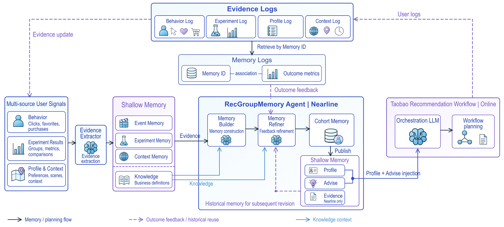
Generative · 2026-11-09RecGroupMemory: Feedback-Aware Cohort Memory for E-Commerce Recommendation用大模型规划推荐流程时，如果希望它参考某类人群过去表现的记忆，就有一个难题：第二天有了新的成交反馈，建议要改，但人群定义、观察窗口和统计数字这些记录不能被模型顺手改掉。RecGroupMemory 把记忆拆成两层，一层是只读的观测记录，一层是画像和建议，前一天的反馈只允许改后一层，改完还要校验观测记录没变，不通过就保留原记录。在电商平台购买力较低、由业务方选定的用户上做线上对比，只加人群记忆的一组，成交用户数比无记忆基线多 1.58%；再加反馈修订的另一组，比它自己的无记忆基线多 1.78%。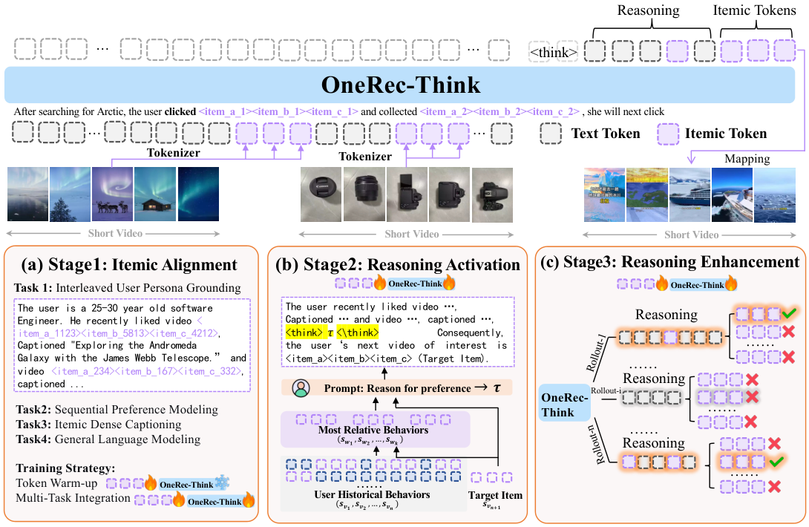
Generative · 2026-07-13OneRec-Think: In-Text Reasoning for Generative Recommendation快手把 Semantic ID 加进 LLM 词表，先对齐物品 token，再教模型先写理由再给 ID，用束搜索里最好候选对上几位作 GRPO 奖励。线上离线生成推理和 ID 前两位，实时模型补最后一位，在 1.29% 的流量上，一周停留时长提高 0.159%。Beauty 上只微调 ID 的 Base 已在 R@5 上超过全部基线，公开数据上的推理是人工类目模板。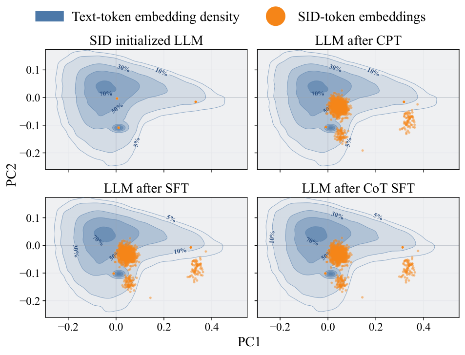
Generative · 2026-06-16Implicit Reasoning for Large Language Model-based Generative Recommendation在 Semantic ID 上做生成式推荐，先写推理再出 SID 的显式 CoT 训练反而不如普通 SFT。论文拆开测了这条流水线，提出 PauseRec：在用户历史后插入几个可训练的停顿 token，只用 SID 预测损失训练，不写推理文字。Amazon Toys 上 Hit@5 从 0.0565 升到 0.0615，训练所需 GPU 时也少得多。
讨论
欢迎补充实验细节、复现经验或不同看法。需 GitHub 登录。
正在加载讨论…